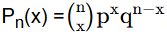

Zentraler Grenzwertsatz
Zentraler Grenzwertsatz: (vereinfachte Formulierung)
A.M. Ljapunoff (1857 - 1918)
Zur Illustration soll die Überlegung (1) und anschliessend unabhängig davon das Formular (2) dienen:
(1) Die Newton'sche Formel

, q = 1-p für die Berechnung bei Binomialverteilung kann auch folgendermassen interpretiert werden:Gegeben seien n voneinander unabhängige Zufallvariablen Z1, Z2, ... , Zn, die nur den Wert 1 (mit Wahrscheinlichkeit p) und den Wert 0 (mit Wahrscheinlichkeit q) annehmen können. Wie gross ist dann die Wahrscheinlichkeit, dass die Summe X := Z1 + Z2 + ... + Zn den Wert x annimmt? Dies ist aber die W'keit, dass das Ereignis "Wert 1 annehmen" genau x -mal von n-mal eintreten muss.
Die W'keit dafür ist eben Pn(x).
Nach dem zentralen Grenzwertsatz ist X angenähert normalverteilt. Dies führt auf die Approximation der Binomialverteilung durch Normalverteilung, also den Grenzwertsatz von de Moivre und Laplace.
(2) In einer Urne liegen 99 von 1 bis 99 nummerierte Kugeln. Man zieht z.B. n = 4000 -mal eine Kugel, notiert die Nummer und legt die
Kugel wieder zurück.
Jede Zahl x von 1 bis 99 ist dann gleichwahrscheinlich. Bildet man nun aber für je z.B. N = 5 aufeinander notierte
Zahlen den Mittelwert, so ist dieser Mittelwert eine angenähert normalverteilte Zufallsvariable (Mittelwerte
um 50 sind häufiger als solche um 30 oder gar solche um 10 oder 90).
- Anzahl Züge (1000≤n≤10000)
- Anzahl notierte Zahlen (5≤N≤20)
- Anzahl der Mittelwerte =
- Mittelwert der Mittelwerte =
- Standardaweichung der Mittelwerte=
Die Klassenbreite wurde 5 gewählt.
Der Inhalt der Rechtecksfläche des Vertreters 47.5 repräsentiert also die
Anzahl der Mittelwerte, die zwischen 45 und 50 liegen; der Inhalt der Rechtecksfläche des Vertreters 52.5 repräsentiert
die Anzahl der Mittelwerte, die zwischen 50 und 55 liegen usw.
Die roten Zahlen geben die absoluten Häufigkeiten der Mittelwerte in der entsprechenden Klasse an.
©1997 - 2026 www.mathematik.ch |🔍